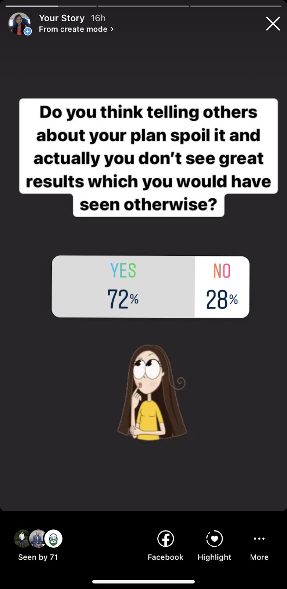

Why your goals should be a Secret?
Posted on 31 July, 2021 in Self Development

Work hard in silence and let your success make noise.
-Frank Ocean
I bet, we all have come across this quotation. This is more than a thought or a quote. It’s a method, it’s a process backed by psychological experiments. We will dive in to see how our perspective towards goals change if we tell it to others and how we can resist ourselves from announcing set goals to the world.
I did an Instagram story poll
to
validate if telling your plans to others spoil it or you lose
interest once you have told them to others. This is what results looked like:

72% of the participants felt that it did spoil if they went out and announced their goals and
plans. Let’s see the
reasons behind this.
Why will sharing your goals not let you achieve them?
There are two reasons for this - one is the principal reason (which is inside us) and then
there’s a secondary reason
that comes from other/external people.
Reason A: Our Mind
Why is it best to keep our mouth shut when it comes to goals or details about it? You should not
even tell it to your
closest friends when you are just starting out but you can definitely open up when you have
walked the path a little.
When you discuss your goal with people they start appreciating you, congratulating you on
thinking to start a new
venture,
you receive appreciative messages from lots of people which
actually tricks your mind
and it starts to think
that you have achieved that goal already! The environment that is built up when
you discuss
it
with people, gives you a
feeling of certain achievement while in reality there isn’t anything like that and you have
not
even taken a step
forward towards that goal. When your mind knows that you have already achieved the goal it
is
less focussed on that.
Brain is not putting the amount of energy which is actually needed to achieve the goal and
just
shifts the attention
somewhere else.
And this is how your behavior changes, you start paying less attention to your goal, even
doing
a little bit seems like
you have already done a lot towards the goal and are distracted easily.
Reason B: Vibrations by people
This is the secondary reason that comes into play and stops you from achieving your goal once
you shout it out.
As soon as you describe it to others they start creating thoughts about it -it can be thoughts
of doubt, jealousy,
happiness etc. which can interfere with your vibrations of hard work.
AN EXPERIMENT
You can skip this part if you have watched this video
or can watch it right now.
There was an experiment conducted where 163 people were asked to write down their goals. Half of
them were also asked to
announce their goals while the other half kept their mouth shut.
Then all 163 people were given tasks to do for 45 minutes which will help them in directly
achieving their goals. They
were also told that they can stop whenever they want.
It was observed that the group who had announced it’s goal worked for 33 minutes on average
and
felt that they worked a
lot towards their goal. The other group who had kept their goals to themselves worked for the
entire 45 minutes and felt
that they needed to do a lot to achieve the goals.
It is proved through this experiment that telling others your plan will actually spoil it. We
have already seen why this
happens:
Reason A) our own mind is tricked into the feeling that we have achieved the goal.
Reason B) The vibration from
other people.
But how can you resist and not tell your goals?
I can understand that whenever we set a new goal we want to boast it off and collect some
appreciation, want to be
applauded etc, and this is purely psychological. Next time when you feel like discussing your
next mission badly with
others try below tips to avoid:
- Write it down. When there is an inner desire to discuss your goal, choose to write it instead. Writing will take you deeper with that goal and you will understand the aspects which were so far hidden. After writing down you will feel proud of yourself and will have a great satisfaction but if you discuss it out you will feel as an energy- drained person.
- Reward Yourself. Soon after achieving your goal or an important milestone of a bigger goal, pamper yourself. Order your favourite ice cream, watch the flick who you have been waiting for. This way you can keep yourself happy and motivated to keep working towards your mission. By this you even get a break from your routine.
- Never Boast off. Be grounded whether you are working on something unique or not. There can still be hundreds of people doing the same thing. Set yourself as a standard and evaluate yourself against that. Read that again.
- Break down. Breaking your goals into smaller doable pieces has many benefits. First of all, the mind is not overwhelmed by the size of the goal. And step by step you reach that bigger goal. You get satisfaction from achieving something smaller while you are on the way to achieve that big goal.
Next time when you decide a goal for yourself, move in silence and let the news of your success reach others.
Hope you learnt something from this and it’s going to help you. Comment your thoughts below or DM me on Instagram.
Keep smiling .
About me